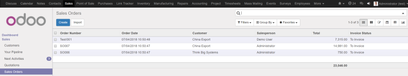

Today filter in Sales
New filter is added to:
- Sales Quotations (Sales/Quotations)
- Sales Orders (Sales/Sales Orders)


This module adds a new filter to 9 different views in Sales, Purchases, Inventory and Accounting.
Thanks to this module user will be able to filter variety of records basing on a date (Today)
Today filter will be added to:
- Sales Quotations (Sales/Quotations)
- Sales Orders (Sales/Sales Orders)
- Requests for Quotation (Purchases/Requests for Quotation)
- Purchase Orders (Purchase/Purchase Orders)
- Stock Operations (Inventory/All Transfers)
- Customer Invoices (Accounting/Customer Invoices)
- Payments (Accounting/Sales/Payments and Accounting/Purchases/Payments)
- Vendor Bills (Accounting/Vendor Bills)
New filter is added to:
- Sales Quotations (Sales/Quotations)
- Sales Orders (Sales/Sales Orders)
New filters is added to:
- Requests for Quotation (Purchases/Requests for Quotation)
- Purchase Orders (Purchase/Purchase Orders)
New filter is added to Stock Operations (Inventory/All Transfers)
New filter is added to:
- Customer Invoices (Accounting/Customer Invoices)
- Payments (Accounting/Sales/Payments and Accounting/Purchases/Payments)
- Vendor Bills (Accounting/Vendor Bills)
If you need help with installation or some additional features feel free to contact
Email: Piotr Cierkosz
Website: www.cier.tech